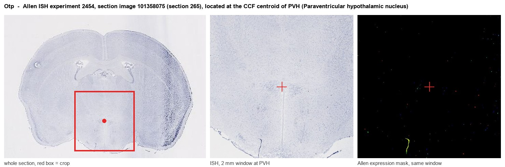
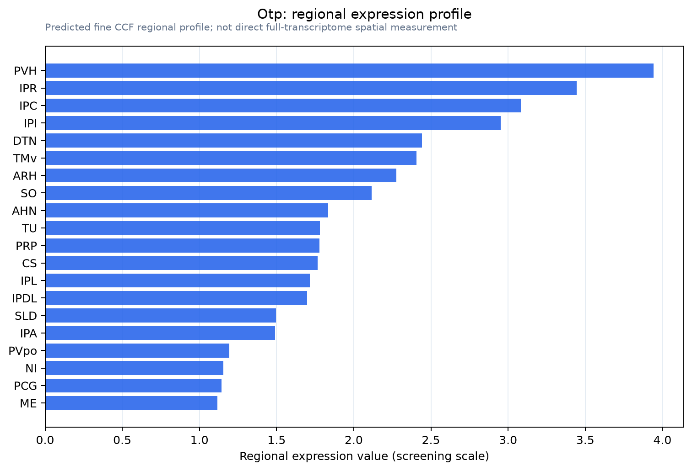

Otp
Spatial tier: RESTRICTED · Class: OTHER · Top region: PVH (Paraventricular hypothalamic nucleus) · Positive regions: 27/554
47.1Discovery Score
43.2Targetability Score
CEvidence grade C
What this means: Otp: fine CCF profile is restricted toward PVH (top regions: PVH, IPR, IPC, IPI, DTN; 27 positive regions); direct spatial validation is still required.
Function in PVH: evidence, prediction, innovation
- Gene function
- Otp encodes Orthopedia, a paired-like homeodomain transcription factor. It binds DNA to switch on terminal differentiation programmes in developing neurosecretory neurons and, unusually for a developmental factor, stays expressed and functionally required in adult hypothalamic neurons where it directly drives target-gene transcription.
- Region function
- The paraventricular hypothalamic nucleus (PVH) houses CRH, oxytocin and vasopressin neuroendocrine cells plus Mc4r-expressing and presympathetic neurons, governing the stress axis, fluid balance and energy expenditure.
- Published in this region
- direct Direct and foundational. Acampora et al. 1999 showed Otp-null mice fail to form the PVH, SON, anterior periventricular and arcuate nuclei - reduced proliferation, abnormal migration and failed terminal differentiation - with Otp and Sim1 acting in parallel to maintain Brn2, which is needed for the oxytocin, vasopressin and CRH lineages. Xu et al. 2025 extended this to adulthood: OTP is enriched in PVH Mc4r neurons and directly activates Mc4r transcription, and deleting Otp in PVH neurons in development or adulthood lowers Mc4r, causing hyperphagia and obesity, with obese human OTP variant carriers identified. Bardet et al. 2008 confirmed the OTP-PVH pattern is conserved across tetrapods.
- Predicted function
- Prediction: beyond Mc4r, OTP most plausibly acts as a continuing terminal selector maintaining the neuropeptide identity of PVH cells throughout life, so adult-onset Otp deletion should progressively erode Crh, Oxt and Avp expression and blunt HPA and osmotic responses even in an anatomically intact PVH. Restoring Mc4r in Otp-deleted PVH neurons should rescue the obesity but not the neuroendocrine deficits.
- Innovation
- ★☆☆☆☆ 1/5 Otp is the textbook PVH specification factor with both a classic null mouse and a 2025 adult conditional plus human-genetics study.
- Tools
- Otp-null mice (Acampora et al. 1999), Otp floxed mice combined with Sim1-Cre or PVH-targeted AAV-Cre for adult deletion (Xu et al. 2025), anti-OTP antibodies; Sim1-Cre, Mc4r-Cre and Crh-Cre for PVH cell-type access.
- References
Direct evidence located at the region

Allen ISH experiment 2454, section image 101358075 (section 265): the section that contains the CCF centroid of Paraventricular hypothalamic nucleus according to the Allen image-to-atlas alignment (reference_to_image), with a 2 mm window around that point. Left: whole section, red box = window. Middle: ISH signal. Right: Allen's expression-mask view of the same window. open this image in the Allen viewer
Look it up yourself: Allen Mouse Brain ISH for OtpAllen reference atlas: PVH (structure 38)ABC Atlas MERFISH viewer(in the ABC Atlas choose dataset MERFISH-C57BL6J-638850-CCF, colour cells by gene "Otp" or by parcellation_substructure "PVH")All genes confined to PVH + 3-D brain
Direct spatial evidence
MERFISH REGION LOCATOR

Regional expression figure

Predicted WMB × fine-CCF profile; not direct full-transcriptome spatial measurement.
Spatial profile
Evidence and specificity
- Evidence status
- PREDICTED_FINE
- Direct sources
- None; predicted localization only
- Exclusive threshold
- 12 positive regions out of 554
- Spatial specificity
- 0.352
- Top-region fraction
- 0.058
- Filter status
- PASS
Interpretation limits
- Cell-type-to-region projection is imputed expression, not direct spatial measurement.
- Adult reference atlases do not establish stability across age, sex, strain, state, or disease.
- Transcript abundance does not guarantee protein abundance or genetic-tool performance.